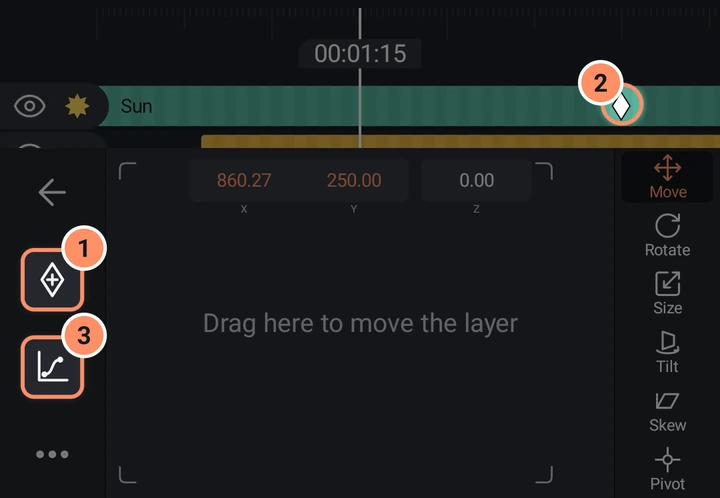

Keyframe và làm mượt
Tạo hoạt ảnh cho mọi giá trị theo thời gian, di chuyển và định thời lại keyframe, định hình chuyển động bằng các đường cong làm mượt.
Trên trang này
Một keyframe lưu giá trị của một thuộc tính tại một thời điểm. Giữa hai keyframe, ứng dụng tính toán các giá trị ở giữa, tạo nên hoạt ảnh. Gần như mọi giá trị đều có thể tạo hoạt ảnh: vị trí, kích thước, xoay, nghiêng, xiên, độ mờ, màu, nét, cài đặt viền và bóng, tham số hình dạng, cài đặt máy ảnh và mô hình, âm lượng và cài đặt của hiệu ứng.
Thêm và xóa keyframe
- Chọn một lớp và mở một bảng, ví dụ Biến đổi, Độ mờ hoặc Hiệu ứng.
- Đặt đầu phát tại thời điểm bạn muốn.
- Nhấn nút Thêm keyframe (hình thoi) ở cột bên trái của bảng. Nút chuyển thành Xóa keyframe khi đầu phát nằm trên một keyframe.

Điều cần biết:
- Khi một thuộc tính đã có keyframe, thay đổi nó tại thời điểm không có keyframe sẽ tự tạo một keyframe tại đó cho bạn. Bạn chỉ cần thêm keyframe đầu tiên bằng tay.
- Xóa keyframe cuối cùng của một thuộc tính sẽ giữ nó cố định ở giá trị cuối cùng đó.
- Nút keyframe bị làm mờ khi cài đặt không thể tạo hoạt ảnh. Nội dung và kích thước văn bản, và các hình vẽ tự do, không có keyframe. Hình dạng được vẽ bằng các điểm có keyframe hình dạng riêng: xem Hình dạng, vẽ và mặt nạ.
- Trong một bảng có nhiều hàng (Tùy chọn hình dạng, Viền & bóng, Tùy chọn máy ảnh), hàng được chọn là hàng nhận keyframe. Trong Biến đổi, Di chuyển tạo hoạt ảnh cho X, Y và Z cùng nhau; Kích thước, Xoay, Xoay 3D (Nghiêng trên máy tính), Làm xiên và Điểm xoay là riêng biệt. Keyframe của Điểm xoay cũng đặt keyframe cho vị trí, nên lớp vẫn ở nguyên chỗ.
- Trong Hiệu ứng, mỗi tham số của một hiệu ứng đang mở có keyframe riêng. Nhấn tên tham số để chọn làm đối tượng.
Ghi keyframe khi đang phát
Nhấn Phát và kéo lớp trên canvas hoặc chỉnh một thuộc tính trong Biến đổi trong khi bản xem trước đang phát. Thay đổi được ghi thành keyframe, kể cả với thuộc tính chưa có keyframe nào. Thả ra để kết thúc việc ghi; một lần hoàn tác sẽ xóa toàn bộ phần đã ghi. Ứng dụng chỉ giữ lại các keyframe cần thiết để bám theo chuyển động.
Nhấn giữ Phát để chọn thời gian đếm ngược một, hai hoặc ba giây và tốc độ xem trước 0.25x, 0.5x hoặc 1x. Trên máy tính, bạn cũng có thể nhấp chuột phải vào Phát. Âm thanh bị tắt khi dưới 1x; việc xuất không bị ảnh hưởng. Nhấn giữ hoặc nhấp chuột phải vào nút thêm keyframe để bật Ghi đè khi đang ghi, thao tác này thay thế các keyframe hiện có trong đoạn đã ghi.
Keyframe trên dòng thời gian
Keyframe hiển thị dưới dạng hình thoi nhỏ trên thanh của lớp. Trên lớp được chọn chúng lớn hơn, và cái nằm dưới đầu phát có một vòng tròn. Khi một thuộc tính hoặc hiệu ứng đang mở, chỉ các hình thoi của nó hiển thị; khi lưới công cụ hiển thị, tất cả hình thoi của lớp đều hiển thị. Khi một hiệu ứng hoặc hiệu ứng chuyển cảnh đang mở, keyframe của các hiệu ứng khác của lớp và của phép biến đổi hiển thị dưới dạng hình thoi nhỏ mờ, để bạn căn keyframe mới theo chúng; không thể kéo chúng.
- Nhảy giữa chúng. Lùi lại và Tiến tới trong thanh phát dừng tại các keyframe của lớp được chọn (chỉ của thuộc tính hoặc hiệu ứng đang mở khi có một cái đang mở).
- Di chuyển keyframe (định thời lại). Nhấn và giữ một hình thoi trên lớp được chọn cho đến khi nó nâng lên, rồi kéo sang ngang. Nó bám vào đầu phát, dấu trang, điểm kết thúc của các lớp khác và các keyframe khác (khi một hiệu ứng đang mở, cả các hình thoi mờ của cùng lớp), và vẫn nằm trong clip. Một lần di chuyển là một bước hoàn tác. Nếu không có thuộc tính hoặc hiệu ứng nào đang mở, tất cả keyframe của lớp tại khung đó di chuyển cùng nhau; nếu một cái đang mở, chỉ keyframe của nó di chuyển. Thêm ngón tay thứ hai sẽ hủy di chuyển.
- Tốc độ không có keyframe riêng. Hãy thay đổi nó theo thời gian bằng đường cong tốc độ: xem Ảnh, video và tốc độ.
Không có sao chép và dán cho một keyframe riêng lẻ. Để tái sử dụng keyframe, hãy sao chép toàn bộ lớp (chúng đi kèm với nó), sao chép một hiệu ứng, hoặc lưu một preset.
Làm mượt: hình dạng của chuyển động
Mặc định một giá trị di chuyển theo đường thẳng từ keyframe này sang keyframe tiếp theo. Làm mượt thay đổi tốc độ di chuyển ở giữa.
Nhấn Làm mượt (nút đường cong) trong một bảng. Một đồ thị mở ra cho đoạn kết thúc tại keyframe tiếp theo. Đầu phát phải nằm giữa hai keyframe của thuộc tính; nếu không ứng dụng yêu cầu bạn thêm keyframe trước.

- Kéo các tay cầm trên đồ thị để thay đổi đường cong. Một đường đứt nét cho thấy đầu phát đang ở đâu trong đoạn, và các mũi tên dưới đồ thị di chuyển đến đoạn trước hoặc tiếp theo.
- Chọn một loại đường cong:
| Loại | Tác dụng |
|---|---|
| Làm mượt Cubic Bezier | Một đường cong mượt với hai tay cầm. Preset: Linear, ease-in, ease-out, ease-in-out. |
| Nảy | Nảy ở cuối như một quả bóng. |
| Đàn hồi | Vượt quá và bật trở lại. |
| Tuần hoàn | Lặp lại một sóng. |
| Ngẫu nhiên | Chuyển động ngẫu nhiên nhảy cóc. |
| Bậc | Nhảy theo bước thay vì di chuyển mượt. |
| Bậc đàn hồi | Các bước vượt quá. |
- Đảo ngược đường cong phản chiếu đường cong (không khả dụng cho Linear).
- Thêm có Sao chép đường cong và Dán đường cong (dán vào đoạn hiện tại), Áp dụng đường cong cho tất cả keyframe, và Bật vượt đà hoặc Tắt vượt đà (chỉ Cubic Bezier). Vượt đà mở rộng đồ thị để các tay cầm có thể vượt qua giá trị đầu và cuối, khiến chuyển động vượt qua mục tiêu và quay lại.
Hoạt ảnh có sẵn
Bạn không cần phải tự tạo mọi hoạt ảnh bằng tay. Tất cả những cái này đều tạo ra keyframe hoặc hiệu ứng thông thường mà bạn có thể chỉnh sửa sau.
- Tạo chuyển động (nút tròn ở góc dưới bên phải của phần xem trước): hoạt ảnh Vào, Ra và Lặp. Xem Chuyển cảnh và hoạt ảnh.
- Chuyển cảnh giữa hai clip.
- Chuyển động máy ảnh như Đẩy vào và Xoay quanh. Xem Lớp máy ảnh và 3D.
- Các hiệu ứng Di chuyển như Tự rung, Dao động, Đung đưa và Xoay: xem Sử dụng hiệu ứng.
- Preset bạn đã lưu từ lớp khác.